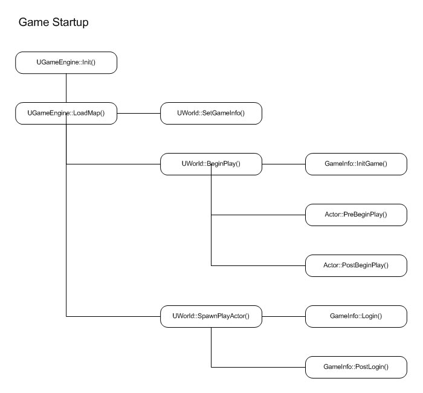
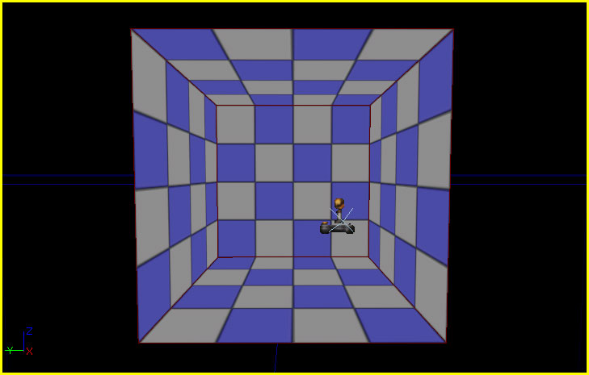
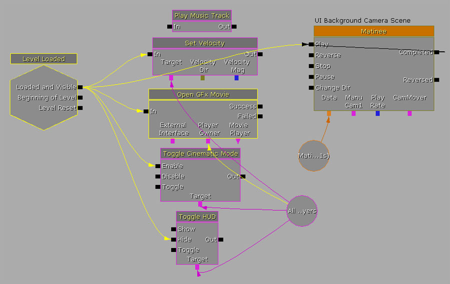

UDN
Search public documentation:
UnrealScriptGameFlow
日本語訳
中国翻译
한국어
Interested in the Unreal Engine?
Visit the Unreal Technology site.
Looking for jobs and company info?
Check out the Epic games site.
Questions about support via UDN?
Contact the UDN Staff
中国翻译
한국어
Interested in the Unreal Engine?
Visit the Unreal Technology site.
Looking for jobs and company info?
Check out the Epic games site.
Questions about support via UDN?
Contact the UDN Staff
UE3 Home > UnrealScript > UnrealScript Game Flow
UE3 Home > Gameplay Programming > UnrealScript Game Flow
UE3 Home > Gameplay Programming > UnrealScript Game Flow
UnrealScript Game Flow
Overview
+ The engine is initialized
|--+ The engine loads a map
|--- The gametype is set
|--+ Gameplay is initialized
| |--- GameInfo:InitGame() is called to initialize the gametype
| |--- Actor::PreBeginPlay() is called to initialize all Actors
| |--- Actor::PostBeginPlay() is called to initialize all Actors
|--+ A Player joins
|--- GameInfo::Login() is called on the gametype to handle spawning the player
|--- GameInfo::PostLogin() is called on the gametype to handle the new player

Startup Movies
StartupMovies array specified in the FullScreenMovie] section of the DefaultEngine.ini file.
[FullScreenMovie] +StartupMovies=UDKFrontEnd.udk_loading
Map Load
Entry Map
The map that loads up when the game starts can be specified on the command line or, if no map is specified, a default map is loaded. In general, no map will be specified, allowing the default map, or entry map, to load. The default map is specified in theDefaultEngine.ini file in the [URL] section.
[URL] Map=UDKFrontEndMap.udk
UDKFrontEndMap.udk map is shown below:

Main Menu
There is no special functionality that forces the game to force a specific menu to be used as the main menu or to force the game startup into a main menu. As was mentioned briefly above, it is the job of the map that is loaded at startup to load the main menu. This allows for great flexibility and control over how the game starts up. For example, one game may simply startup and show the main menu immediately, while another game could startup showing a cinematic that transitions into the main menu, and yet another game may allow a brief bit of gameplay preceding the displaying of the menu. In fact, the game could even skip the idea of a main menu altogether if that was desired. The menu is opened using Kismet. An example of Kismet for loading the main menu from theUDKFrontEndMap.udk map is show here:

Loading screen
Any transition from one map to another causes a loading screen to be displayed. The loading screen is actually a fullscreen video (.bik) chosen at random from theLoadMapMovies array specified in the FullScreenMovie] section of the DefaultEngine.ini file.
[FullScreenMovie] +LoadMapMovies=UDKFrontEnd.udk_loading
Game Startup
Game Init
TheInitGame() event of the current GameInfo is called before any other scripts are executed, including all Actors' PreBeginplay() events. This is mainly for the gametype to set up its own parameters and spawn any helper classes needed.
event InitGame( string Options, out string ErrorMessage )
PreBeginPlay
ThePreBeginPlay() event is the first script function called on the Actor after execution of the Actor's script has begin. Its name implies it is called before gameplay begins, which is the case if the Actor exists when the game starts up. If the Actor is spawned during play, this event is still called even though gameplay has already begun. Very specialized initialization could be performed here, but keep in mind that the Actor's components have not been initialized at this point and there is no reliable way to ensure that any external object has been initialized either.
event PreBeginPlay()
PostBeginPlay
ThePostBeginPlay() event is called after all other Actors have been initialized, via their PreBeginPlay() events. This event is generally used to initialize properties, find references to other Actors in the world, and perform any other general initialization. It is fair to consider this event the script equivalent of a constructor for Actors. Even so, there are still some things that require using specialized events available in the Actor to initialize. For instance, initialization having to do with animations and the AnimTree would best be performed in the PostInitAnimTree() event as that is called after the AnimTree is created and initialized. There are many such events provided for doing this type of specialized initialization. It is best to search for these first before adding specific initialization functionality to the PostBeginPlay() event.
event PostBeginPlay()
Player Creation
Player creation is handled inside the gametype (e.g., theGameInfo class) through the process of logging in. In the context of networked online multiplayer games, this concept should make perfect sense. Unreal utilizes the same basic process regardless of whether the game is online, offline, multiplayer, or single-player, though obviously there are additional actions being carried out in an online situation.
The login process is broken up into several stages:
- PreLogin
- Login
- PostLogin
PreLogin() event is called from native code and is responsible for determining whether the player is allowed to join the game. It uses the AccessControl object of the gametype to determine whether the player can join by calling its PreLogin() function.
event PreLogin(string Options, string Address, out string ErrorMessage)
Login() event is called from native code and is responsible for spawning the player. Any specialized functionality needed for creating new players should be added here.
event PlayerController Login(string Portal, string Options, const UniqueNetID UniqueID, out string ErrorMessage)
PostLogin() event is called from native code after the player has successfully joined the game. This is a good place to do player initialization and is a safe place to call replicated functions on the PlayerController.
event PostLogin( PlayerController NewPlayer )
Match Start
The actual game, as in the gameplay that happens from the time the player is spawned until the game ends, is often referred to as a match. This is just a term and has no bearing on the type of games that can be created with Unreal Engine 3. The match is begun when theStartMatch() function of the gametype is called from the PostLogin() event (also called from StartMatch() and StartArbitratedMatch() in the PendingMatch state). This function is responsible for spawning the player's Pawns and notifying all of the players that the match has begun.
function StartMatch()
Pawns occurs in the RestartPlayer() function. This is called from the StartHumans() and StartBots() functions, which are in turn called from the StartMatch() function. In addition to spawning the Pawns, this function locates a starting spot, e.g. a PlayerStart Actor, to start the player from.
function RestartPlayer(Controller NewPlayer)
End Game
GameInfo. For example, the UTGame gametype has a CheckScore() function which gets called anytime a player gets killed to check to see if that kill should end the game. When one of these functions determines the game should end, that function then calls the EndGame() function, which in turn calls CheckEndGame(). These functions make sure the game can end and then perform the actions associated with ending the current gametype.
In the example of an adventure role-playing game, when the player is in a dungeon and the boss is defeated or the objective is completed, the boss or the objective would notify the gametype it had been killed or completed, respectively. The gametype would then check to be sure that all end gamed conditions had been completed. If the end game condition have indeed been completed, the gametype calls EndGame() to perform the appropriate actions for ending the game: sending the player back to the main world and recording that the dungeon had been completed in one manner or another. In the main world, the gametype would load the player's progress, which might be the dungeons completed by the player, and then check to see if all end game conditions have been met. If the conditions have been met, that gametype would then call its EndGame() to initiate the appropriate actions for the game being over.
Obviously, this is just an example and every game will have different rules, flow, and conditions for ending the game, but the idea should be clear.